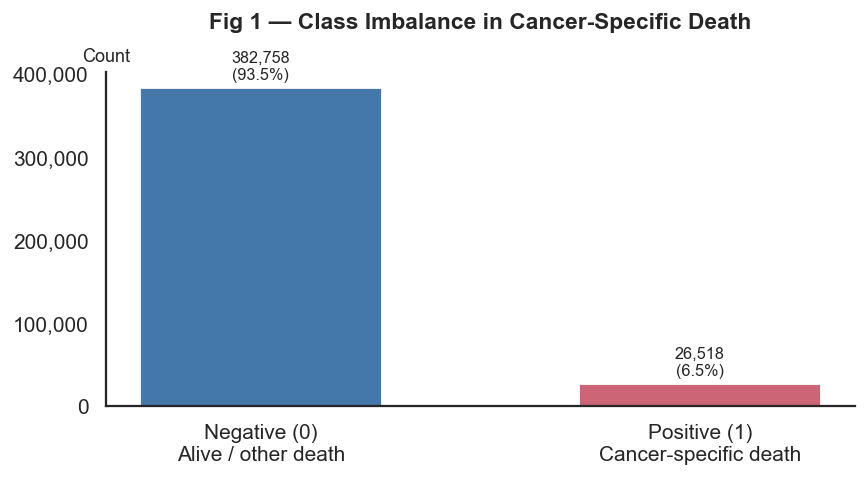
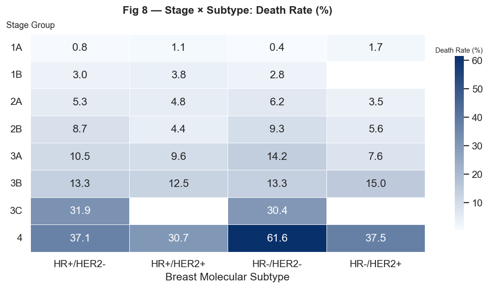

Confirmed
Stage is the strongest single clinical risk signal and should dominate SHAP importance.
M4 · Exploratory Data Analysis
EDA confirms severe class imbalance, strong stage-driven mortality gradients, stage-subtype interaction, non-linear age effects, and temporal follow-up truncation.


Interactive evidence gallery
Stage is the strongest single clinical risk signal and should dominate SHAP importance.
Subtype matters most through interaction with stage, not as a simple additive effect.
Temporal follow-up truncation means calibration must be interpreted carefully on recent cases.
The target is severely imbalanced. Age peaks around older adult groups, and diagnosis year patterns reveal that recent records have shorter observed follow-up.
Stage, subtype, tumor size, and race show visible mortality differences. These patterns motivate including both clinical severity and demographic context.
Stage-subtype and age-stage heatmaps reveal interactions that simple main-effect models may miss.
Use temporal validation, PR-AUC, class-weighting or threshold adjustment, tree-based models for interactions, and calibration checks for probability outputs.
EDA to modelling handoff
| EDA finding | Implication | Implemented in M5/M6 |
|---|---|---|
| Severe class imbalance | Accuracy is not enough; use PR-AUC, F1, recall, and threshold-aware interpretation. | M5 ranks models by PR-AUC; M6 reports risk tier instead of a hard yes/no claim. |
| Stage dominates risk | Stage should be a central predictor and a clinical plausibility check. | M6 requires stage and shows stage as a top driver when relevant. |
| Stage and subtype interact | Prefer models that capture non-linear interactions. | BioFusion combines tree-based learners that handle interactions naturally. |
| Age effect is non-linear | A single linear age slope may miss young and elderly risk patterns. | M6 treats age groups differently inside the backend model logic. |
| Missingness is structured | Unknown values should remain visible rather than being silently overwritten. | The demo supports unknown categories for subtype, grade, and race. |